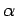
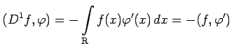
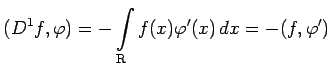
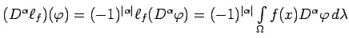

Ist  eine gegebene Distribution, dann heißt die Distribution , definiert durch
eine gegebene Distribution, dann heißt die Distribution , definiert durch
die (distributionelle) Ableitung der Ordnung  von .
Seien f eine stetig differenzierbare Funktion, etwa auf  (damit ist f lokalsummierbar auf
(damit ist f lokalsummierbar auf  und f als Distribution auffaßbar), f' ihre klassische Ableitung und D1f ihre distributionelle Ableitung der Ordnung
und f als Distribution auffaßbar), f' ihre klassische Ableitung und D1f ihre distributionelle Ableitung der Ordnung  . Dann gilt , woraus durch partielle Integration  folgt.
. Dann gilt , woraus durch partielle Integration  folgt.
Im Falle einer regulären Distribution erhält man wegen
 die verallgemeinerte Ableitung der Funktion f im Sinne von SOBOLEW.
| Beispiel A |
zugeordnete reguläre Distribution erhält man als Ableitung die nichtreguläre  -Distribution.
-Distribution.
| Beispiel B |
|
Bei der mathematischen Modellierung von technischen und physikalischen Problemen treten häufig (in gewisser Hinsicht idealisierte) auf einen Punkt konzentrierte Einwirkungen, wie ,,punktförmige`` Kräfte, Nadelimpulse, Stoßvorgänge usw. auf, die mathematisch ihren Ausdruck in der Verwendung der Die Bewegungsgleichung eines Feder-Masse-Systems, auf das zum Zeitpunkt t0 eine momentane äußere Kraft der Größe F einwirkt, hat die Form . Mit den Anfangsbedingungen ist die Lösung. |